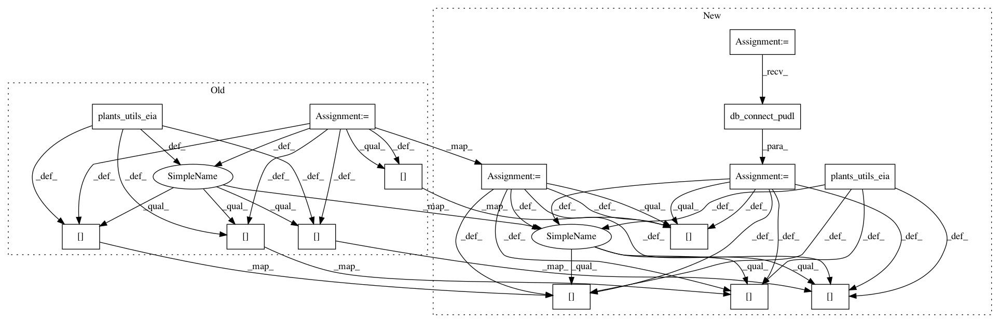

eb55f5593d53135d3df0943c346055f125c7c6ee,pudl/outputs.py,,fuel_receipts_costs_eia923,#Any#Any#Any#Any#,490
Before Change
frc_df["fuel_cost_per_mmbtu"] = \
frc_df["total_fuel_cost"] / frc_df["total_heat_content_mmbtu"]
frc_df["heat_content_mmbtu_per_unit"] = \
frc_df["total_heat_content_mmbtu"] / frc_df["fuel_quantity"]
frc_df["sulfur_content_pct"] = \
frc_df["total_sulfur_content"] / frc_df["fuel_quantity"]
frc_df["ash_content_pct"] = \
frc_df["total_ash_content"] / frc_df["fuel_quantity"]
frc_df["mercury_content_ppm"] = \
frc_df["total_mercury_content"] / frc_df["fuel_quantity"]
frc_df = frc_df.reset_index()
frc_df = frc_df.drop(["total_ash_content",
"total_sulfur_content",
"total_mercury_content"], axis=1)
// Bring in some generic plant & utility information:
pu_eia = plants_utils_eia(pudl_engine)
out_df = analysis.merge_on_date_year(frc_df, pu_eia, on=["plant_id"])
// Drop any records where we"ve failed to get the 860 data merged in...
out_df = out_df.dropna(subset=["operator_id", "operator_name"])
if freq is None:
// There are a couple of invalid records with no specified fuel.
out_df = out_df.dropna(subset=["fuel_group"])
first_cols = ["report_date",
"plant_id",
"plant_id_pudl",
"plant_name",
"operator_id",
"util_id_pudl",
"operator_name", ]
// Re-arrange the columns for easier readability:
out_df = organize_cols(out_df, first_cols)
// Clean up the types of a few columns...
out_df["plant_id"] = out_df.plant_id.astype(int)
out_df["plant_id_pudl"] = out_df.plant_id_pudl.astype(int)
out_df["operator_id"] = out_df.operator_id.astype(int)
out_df["util_id_pudl"] = out_df.util_id_pudl.astype(int)
return(out_df)
After Change
Returns:
frc_df: a pandas dataframe.
pudl_engine = pudl.db_connect_pudl(testing=testing)
// Most of the fields we want come direclty from Fuel Receipts & Costs
frc_tbl = pt["fuel_receipts_costs_eia923"]
frc_select = sa.sql.select([frc_tbl, ])
// Need to re-integrate the MSHA coalmine info:
cmi_tbl = pt["coalmine_info_eia923"]
cmi_select = sa.sql.select([cmi_tbl, ])
cmi_df = pd.read_sql(cmi_select, pudl_engine)
if start_date is not None:
frc_select = frc_select.where(
frc_tbl.c.report_date >= start_date)
if end_date is not None:
frc_select = frc_select.where(
frc_tbl.c.report_date <= end_date)
frc_df = pd.read_sql(frc_select, pudl_engine)
frc_df = pd.merge(frc_df, cmi_df,
how="left",
left_on="coalmine_id",
right_on="id")
cols_to_drop = ["fuel_receipt_id", "coalmine_id", "id"]
frc_df = frc_df.drop(cols_to_drop, axis=1)
// Calculate a few totals that are commonly needed:
frc_df["total_heat_content_mmbtu"] = \
frc_df["heat_content_mmbtu_per_unit"] * frc_df["fuel_quantity"]
frc_df["total_fuel_cost"] = \
frc_df["total_heat_content_mmbtu"] * frc_df["fuel_cost_per_mmbtu"]
by = ["plant_id", "energy_source_simple"]
if freq is not None:
// Create a date index for temporal resampling:
frc_df = frc_df.set_index(pd.DatetimeIndex(frc_df.report_date))
by = by + [pd.Grouper(freq=freq)]
// Sum up these values so we can calculate quantity weighted averages
frc_df["total_ash_content"] = \
frc_df["ash_content_pct"] * frc_df["fuel_quantity"]
frc_df["total_sulfur_content"] = \
frc_df["sulfur_content_pct"] * frc_df["fuel_quantity"]
frc_df["total_mercury_content"] = \
frc_df["mercury_content_ppm"] * frc_df["fuel_quantity"]
frc_gb = frc_df.groupby(by=by)
frc_df = frc_gb.agg({
"fuel_quantity": np.sum,
"total_heat_content_mmbtu": np.sum,
"total_fuel_cost": np.sum,
"total_sulfur_content": np.sum,
"total_ash_content": np.sum,
"total_mercury_content": np.sum,
})
frc_df["fuel_cost_per_mmbtu"] = \
frc_df["total_fuel_cost"] / frc_df["total_heat_content_mmbtu"]
frc_df["heat_content_mmbtu_per_unit"] = \
frc_df["total_heat_content_mmbtu"] / frc_df["fuel_quantity"]
frc_df["sulfur_content_pct"] = \
frc_df["total_sulfur_content"] / frc_df["fuel_quantity"]
frc_df["ash_content_pct"] = \
frc_df["total_ash_content"] / frc_df["fuel_quantity"]
frc_df["mercury_content_ppm"] = \
frc_df["total_mercury_content"] / frc_df["fuel_quantity"]
frc_df = frc_df.reset_index()
frc_df = frc_df.drop(["total_ash_content",
"total_sulfur_content",
"total_mercury_content"], axis=1)
// Bring in some generic plant & utility information:
pu_eia = plants_utils_eia(start_date=start_date,
end_date=end_date,
testing=testing)
out_df = analysis.merge_on_date_year(frc_df, pu_eia, on=["plant_id"])
// Drop any records where we"ve failed to get the 860 data merged in...
out_df = out_df.dropna(subset=["operator_id", "operator_name"])
if freq is None:
// There are a couple of invalid records with no specified fuel.
out_df = out_df.dropna(subset=["fuel_group"])
first_cols = ["report_date",
"plant_id",
"plant_id_pudl",
"plant_name",
"operator_id",
"util_id_pudl",
"operator_name", ]
// Re-arrange the columns for easier readability:
out_df = organize_cols(out_df, first_cols)
// Clean up the types of a few columns...
out_df["plant_id"] = out_df.plant_id.astype(int)
out_df["plant_id_pudl"] = out_df.plant_id_pudl.astype(int)
out_df["operator_id"] = out_df.operator_id.astype(int)
out_df["util_id_pudl"] = out_df.util_id_pudl.astype(int)
return(out_df)
In pattern: SUPERPATTERN
Frequency: 3
Non-data size: 15
Instances
Project Name: catalyst-cooperative/pudl
Commit Name: eb55f5593d53135d3df0943c346055f125c7c6ee
Time: 2017-11-23
Author: zane.selvans@catalyst.coop
File Name: pudl/outputs.py
Class Name:
Method Name: fuel_receipts_costs_eia923
Project Name: catalyst-cooperative/pudl
Commit Name: eb55f5593d53135d3df0943c346055f125c7c6ee
Time: 2017-11-23
Author: zane.selvans@catalyst.coop
File Name: pudl/outputs.py
Class Name:
Method Name: generation_fuel_eia923
Project Name: catalyst-cooperative/pudl
Commit Name: eb55f5593d53135d3df0943c346055f125c7c6ee
Time: 2017-11-23
Author: zane.selvans@catalyst.coop
File Name: pudl/outputs.py
Class Name:
Method Name: boiler_fuel_eia923